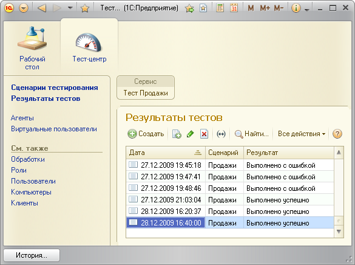

Результаты текущего выполнения теста показываются непосредственно после его завершения. Так же можно просмотреть историю запусков всех тестов и результаты по каждому из них. Для просмотра истории запусков нажмите ссылку «Результаты тестов».

Форма результатов отображает средние значения всех показателей производительности и полный протокол сообщений, зарегистрированных в ходе тестирования.